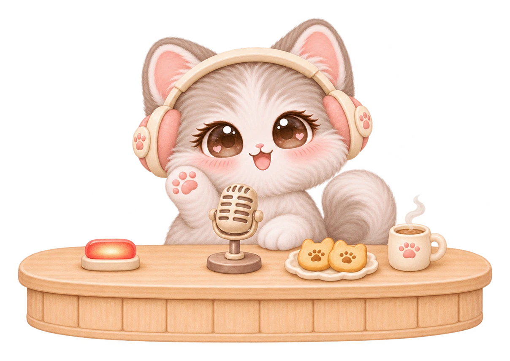
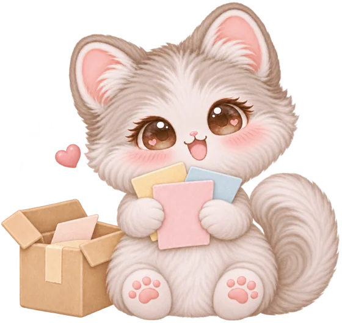

추억앨범만
나만의 추억앨범 사이트
3,000원 / 월
1년 결제 시 30,000원
신청하기스푼 DJ를 위한 PC 채팅 봇

먼치킨은 Windows PC 프로그램이에요
휴대폰으로 방송해도 돼요. PC에 먼치킨만 켜 두면 돼요.
PC에서 먼치킨.com을 열어 받아 주세요.
12월 31일까지 무료 · 그 뒤 월 3,000원
먼치킨 0.23.9 · Windows 10·11 (64비트) · 116MB · 무료 베타
먼치킨에만 있어요 1/4
달무리가 100스푼을 후원해요
먼치킨매니저
🏦 달무리님 100스푼 자동 입금! 💰 잔액 100스푼 ⏰ 이번 방송 안에 안 쓰면 삭제돼요! 👉 !실드 명령어로 바로 사용하실 수 있어요.
DJ가 정해 둔 대로 먼치킨이 알아서 해요.
먼치킨에만 있어요 2/4
초성퀴즈 2,251개 · OX 330개 · 밸런스 254개가 이미 들어 있어요.
먼치킨에만 있어요 3/4
청취자가 채팅으로 몬스터를 만나 키우는 게임이에요. 12월 1일 0시 시작 · 시즌 2 「몬스터 영토전」은 스푼에 없던 방 대 방 대전이에요.
먼치킨에만 있어요 4/4
청취자가 !뽑기 13 하면 먼치킨이 칸을 열어요.
월 3,000원
다른 봇 석 달 쓸 돈이면, 먼치킨은 1년을 함께해요.
먼치킨은 Windows PC 프로그램이에요
휴대폰으로 방송해도 돼요. PC에 먼치킨만 켜 두면 돼요.
PC에서 먼치킨.com을 열어 받아 주세요.
막대는 1년 결제(30,000원) 기준이에요. 한 달씩 내면 월 3,000원이에요. 2026년 12월 31일까지는 무료예요.
사업자는 현금영수증이나 카드 영수증으로 비용 처리할 수 있어요. 카드 결제는 심사가 끝나면 열려요.
다른 봇 기록 이어오기 가능!

어느 DJ
매니저 킵 추가가 안 돼요. 고정 매니저만 되나요?
먼치킨 챗봇앱
고정 매니저가 아니어도 돼요. 방송 중에 준 매니저도 쓸 수 있어요.
어느 DJ
찾았습니다. 감사합니다!
디스코드에서 24시간 문의를 받아요.
뉴비랩(NEWVIE Lab) · 사업자등록번호 748-15-02934 · 공정거래위원회에서 확인할 수 있어요(새 창).
신고번호 제2026-대구수성구-1478호
계좌이체로 결제할 때 개인(소득공제)이나 사업자(지출증빙) 현금영수증을 신청해요. 자세한 세금 처리는 세무사나 국세청(☎126)에 물어봐 주세요.
허용은 스푼 화면에서 누르고, 스푼 비밀번호는 먼치킨에 적지 않아요.
고객안내 0505-008-0032 · 디스코드 「먼치킨 DJ 모임」
먼치킨.com의 받기 단추로 받은 파일만 이렇게 열어 주세요.
파일 이름은 Munchkin-Setup으로 시작해요.
다른 곳에서 받은 파일은 열지 마세요.
PC에서 받을 때 보는 그림 안내예요. 제목을 누르면 펼쳐져요.
받기 단추를 누르면 엣지 오른쪽 위에 다운로드 창이 떠요.
창이 사라졌다면 키보드에서 Ctrl + J를 누르면 다시 열려요.
파일 옆 "···"(더 보기)을 눌러요휴지통 단추는 누르지 마세요.
파일이 지워져요.
메뉴에서 "유지"를 눌러요"파일을 남겨 둔다"는 뜻이에요.
Microsoft Defender SmartScreen은 이 파일이 안전한지 확인할 수 없습니다.
창 아래 "더 보기"를 눌러요파란 "삭제" 단추는 누르지 마세요.
"그래도 계속"을 눌러요이제 파일이 PC에 저장돼요.
"파일 열기"를 눌러요다운로드 폴더에서 파일을 두 번 눌러도 돼요.
다음은 아래 윈도우 파란 창이에요.
파일을 열면 윈도우가 파란 창을 한 번 더 띄울 수 있어요.
크롬으로 받았을 때도 같아요.
Microsoft Defender SmartScreen에서 인식할 수 없는 앱의 시작을 차단했습니다. 이 앱을 실행하면 PC가 위험에 노출될 수 있습니다.
글 아래 "추가 정보"를 눌러요처음에는 "실행" 단추가 안 보여요.
"추가 정보"를 눌러야 나와요.
"실행"을 누르면 설치가 이어져요"알 수 없는 게시자"는 서명이 없다는 뜻이에요.
앱 이름이 Munchkin-Setup인지만 확인해 주세요.
설치가 끝나면 먼치킨을 켜서 "스푼 연결"을 눌러 주세요.
이 창들은 처음 한 번만 나와요.
새 버전은 먼치킨이 켜질 때 저절로 업데이트돼요.
오른쪽 위 다운로드 단추를 누르면 받은 파일 목록이 보여요.
먼치킨 파일 옆에 경고가 붙어 있으면, 그 파일을 눌러 받기를 이어 가는 단추를 눌러 주세요.
그다음은 위 "설치 파일을 열 때"와 같아요.
그림은 실제 창을 간단히 옮겨 그린 거예요.
엣지와 윈도우 버전에 따라 글자나 단추 모양이 조금 다를 수 있어요.
먼치킨은 2026년 12월 31일까지 무료예요.
먼치킨만 쓰는 분은 신청하지 않아도 돼요.
2027년 1월 1일부터 유료예요.
이용권은 지금 이용권 칸에서 신청할 수 있고, 그 전에 결제한 이용권은 1월 1일부터 자동으로 쓰여요.
계좌이체는 지금 되고, 카드 결제는 KG이니시스 심사가 끝나면 열려요.
네. Windows PC에 먼치킨을 켜 두면 휴대폰 방송에서도 인사, 게임, 통장이 움직여요.
효과음과 TTS는 PC에서 나와요.
먼치킨은 DJ의 PC에서 움직이니, 방송할 때 PC와 먼치킨을 함께 켜 두세요.
네. 먼치킨.com/album에서 누구나 신청할 수 있어요.
결제가 확인되면 앨범이 바로 만들어지고, 이용 기간은 1월 1일부터 시작해요.
한이준 추억앨범(새 창)에서 어떤 모습인지 먼저 만나 보세요.
먼치킨을 켜면 새 버전으로 저절로 업데이트해요.
공지와 자세한 업데이트 소식은 먼치킨 디스코드(새 창)에서 만나요.

먼치킨은 Windows PC 프로그램이에요
이 기기에는 설치할 수 없어요.
PC에서 먼치킨.com을 열어 받아 주세요.
주소를 보내 두면 PC에서 바로 열 수 있어요.
먼치킨 0.23.9 · Windows 10·11 (64비트) · 116MB · 무료 베타